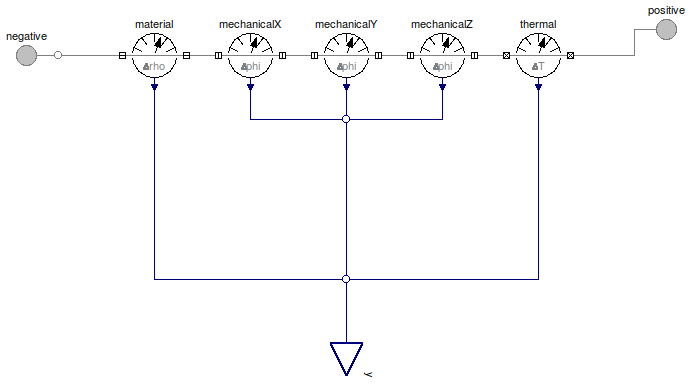
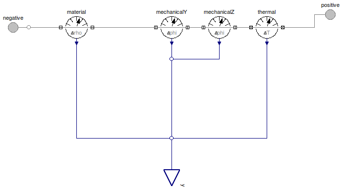
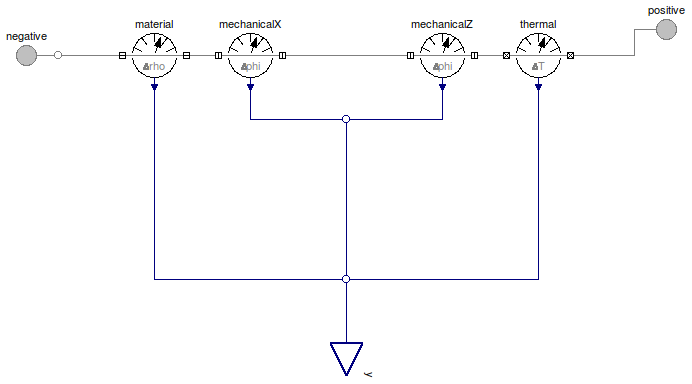
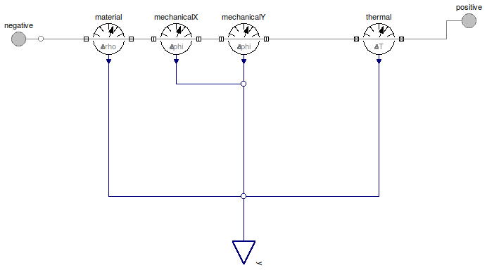

Table of Contents
- User's Guide
- BCs
- Sensors
- Assemblies**
- Regions**
- Subregions
- Connectors
- Characteristics
- Units
- Quantities
- BaseClasses
- **Please check back soon or contact kdavies4 at gmail.com.
Download
- Latest: FCSys-2.0.zip (**Check back soon.)

| Name | Description |
|---|---|
| Sensor for faces of a Species model (single-species) | |
| Sensor for x-axis faces of a Species model (single-species) | |
| Sensor for y-axis faces of a Species model (single-species) | |
| Sensor for z-axis faces of a Species model (single-species) | |
| Relative sensors for normal linear momentum | |
| Relative sensors for transverse linear momentum | |
| Relative thermal sensors | |
| Base classes (not for direct use) |
 FCSys.Sensors.FaceDifferential.Species
FCSys.Sensors.FaceDifferential.Species
| Type | Name | Default | Description |
|---|---|---|---|
| ThermoOpt | thermoOpt | ThermoOpt.ClosedAdiabatic | Options for material and thermal subconnectors |
| Density | material | redeclare Material.Density m... | Type of sensor |
| Temperature | thermal | redeclare Thermal.Temperatur... | Type of condition |
| Axis | axis | Axis.x | Axis normal to the face |
| X-axis linear momentum | |||
| Boolean | inviscidX | true | Inviscid |
| Velocity | mechanicalX | redeclare Mechanical.Velocit... | Condition |
| Y-axis linear momentum | |||
| Boolean | inviscidY | true | Inviscid |
| Velocity | mechanicalY | redeclare Mechanical.Velocit... | Condition |
| Z-axis linear momentum | |||
| Boolean | inviscidZ | true | Inviscid |
| Velocity | mechanicalZ | redeclare Mechanical.Velocit... | Condition |
| Type | Name | Description |
|---|---|---|
| RealOutputBus | y | Output bus for measurements |
| Face | negative | Negative-side connector for material, linear momentum, and heat |
| Face | positive | Positive-side connector for material, linear momentum, and heat |
model Species "Sensor for faces of a Species model (single-species)" extends BaseClasses.PartialSpecies; parameter Axis axis=Axis.x "Axis normal to the face"; // X-axis mechanical parameter Boolean inviscidX=true "Inviscid"; // Note: Dymola 7.4 doesn't recognize enumerations in the dialog enable // option, e.g., // enable=axis <> Axis.x. // Therefore, the values of the enumerations are specified numerically.replaceable Mechanical.Velocity mechanicalX if axis <> Axis.x and not inviscidX "Condition"; // Y-axis mechanical parameter Boolean inviscidY=true "Inviscid";replaceable Mechanical.Velocity mechanicalY if axis <> Axis.y and not inviscidY "Condition"; // Z-axis mechanical parameter Boolean inviscidZ=true "Inviscid";replaceable Mechanical.Velocity mechanicalZ if axis <> Axis.z and not inviscidZ "Condition"; FCSys.Connectors.Face negative( final thermoOpt=thermoOpt, final inviscidX=inviscidX, final inviscidY=inviscidY, final inviscidZ=inviscidZ) "Negative-side connector for material, linear momentum, and heat"; FCSys.Connectors.Face positive( final thermoOpt=thermoOpt, final inviscidX=inviscidX, final inviscidY=inviscidY, final inviscidZ=inviscidZ) "Positive-side connector for material, linear momentum, and heat"; equation // Materialconnect(material.negative, negative.material); connect(material.positive, positive.material); // X-axis mechanicalconnect(mechanicalX.negative, negative.mechanicalX); connect(mechanicalX.positive, positive.mechanicalX); connect(mechanicalX.y, y.mechanicalX); // Y-axis mechanicalconnect(mechanicalY.negative, negative.mechanicalY); connect(mechanicalY.positive, positive.mechanicalY); connect(mechanicalY.y, y.mechanicalY); // Z-axis mechanicalconnect(mechanicalZ.negative, negative.mechanicalZ); connect(mechanicalZ.positive, positive.mechanicalZ); connect(mechanicalZ.y, y.mechanicalZ); // Thermalconnect(thermal.negative, negative.thermal); connect(thermal.positive, positive.thermal); end Species;
FCSys.Sensors.FaceDifferential.SpeciesX
| Type | Name | Default | Description |
|---|---|---|---|
| ThermoOpt | thermoOpt | ThermoOpt.ClosedAdiabatic | Options for material and thermal subconnectors |
| Density | material | redeclare Material.Density m... | Type of sensor |
| Temperature | thermal | redeclare Thermal.Temperatur... | Type of condition |
| Y-axis linear momentum | |||
| Boolean | inviscidY | true | Inviscid |
| Velocity | mechanicalY | redeclare Mechanical.Velocit... | Condition |
| Z-axis linear momentum | |||
| Boolean | inviscidZ | true | Inviscid |
| Velocity | mechanicalZ | redeclare Mechanical.Velocit... | Condition |
| Type | Name | Description |
|---|---|---|
| RealOutputBus | y | Output bus for measurements |
| FaceX | negative | Negative-side connector for material, linear momentum, and heat |
| FaceX | positive | Positive-side connector for material, linear momentum, and heat |
model SpeciesX "Sensor for x-axis faces of a Species model (single-species)" extends BaseClasses.PartialSpecies; // Y-axis mechanical parameter Boolean inviscidY=true "Inviscid";replaceable Mechanical.Velocity mechanicalY if not inviscidY "Condition"; // Z-axis mechanical parameter Boolean inviscidZ=true "Inviscid";replaceable Mechanical.Velocity mechanicalZ if not inviscidZ "Condition"; FCSys.Connectors.FaceX negative( final thermoOpt=thermoOpt, final inviscidY=inviscidY, final inviscidZ=inviscidZ) "Negative-side connector for material, linear momentum, and heat"; FCSys.Connectors.FaceX positive( final thermoOpt=thermoOpt, final inviscidY=inviscidY, final inviscidZ=inviscidZ) "Positive-side connector for material, linear momentum, and heat"; equation // Materialconnect(material.negative, negative.material); connect(material.positive, positive.material); // Y-axis mechanicalconnect(mechanicalY.negative, negative.mechanicalY); connect(mechanicalY.positive, positive.mechanicalY); connect(mechanicalY.y, y.mechanicalY); // Z-axis mechanicalconnect(mechanicalZ.negative, negative.mechanicalZ); connect(mechanicalZ.positive, positive.mechanicalZ); connect(mechanicalZ.y, y.mechanicalZ); // Thermalconnect(thermal.negative, negative.thermal); connect(thermal.positive, positive.thermal); end SpeciesX;
FCSys.Sensors.FaceDifferential.SpeciesY
| Type | Name | Default | Description |
|---|---|---|---|
| ThermoOpt | thermoOpt | ThermoOpt.ClosedAdiabatic | Options for material and thermal subconnectors |
| Density | material | redeclare Material.Density m... | Type of sensor |
| Temperature | thermal | redeclare Thermal.Temperatur... | Type of condition |
| Z-axis linear momentum | |||
| Boolean | inviscidZ | true | Inviscid |
| Velocity | mechanicalZ | redeclare Mechanical.Velocit... | Condition |
| X-axis linear momentum | |||
| Boolean | inviscidX | true | Inviscid |
| Velocity | mechanicalX | redeclare Mechanical.Velocit... | Condition |
| Type | Name | Description |
|---|---|---|
| RealOutputBus | y | Output bus for measurements |
| FaceY | negative | Negative-side connector for material, linear momentum, and heat |
| FaceY | positive | Positive-side connector for material, linear momentum, and heat |
model SpeciesY "Sensor for y-axis faces of a Species model (single-species)" extends BaseClasses.PartialSpecies; // Z-axis mechanical parameter Boolean inviscidZ=true "Inviscid";replaceable Mechanical.Velocity mechanicalZ if not inviscidZ "Condition"; // X-axis mechanical parameter Boolean inviscidX=true "Inviscid";replaceable Mechanical.Velocity mechanicalX if not inviscidX "Condition"; FCSys.Connectors.FaceY negative( final thermoOpt=thermoOpt, final inviscidX=inviscidX, final inviscidZ=inviscidZ) "Negative-side connector for material, linear momentum, and heat"; FCSys.Connectors.FaceY positive( final thermoOpt=thermoOpt, final inviscidX=inviscidX, final inviscidZ=inviscidZ) "Positive-side connector for material, linear momentum, and heat"; equation // Materialconnect(material.negative, negative.material); connect(material.positive, positive.material); // Z-axis mechanicalconnect(mechanicalZ.negative, negative.mechanicalZ); connect(mechanicalZ.positive, positive.mechanicalZ); connect(mechanicalZ.y, y.mechanicalZ); // X-axis mechanicalconnect(mechanicalX.negative, negative.mechanicalX); connect(mechanicalX.positive, positive.mechanicalX); connect(mechanicalX.y, y.mechanicalX); // Thermalconnect(thermal.negative, negative.thermal); connect(thermal.positive, positive.thermal); end SpeciesY;
FCSys.Sensors.FaceDifferential.SpeciesZ
| Type | Name | Default | Description |
|---|---|---|---|
| ThermoOpt | thermoOpt | ThermoOpt.ClosedAdiabatic | Options for material and thermal subconnectors |
| Density | material | redeclare Material.Density m... | Type of sensor |
| Temperature | thermal | redeclare Thermal.Temperatur... | Type of condition |
| X-axis linear momentum | |||
| Boolean | inviscidX | true | Inviscid |
| Velocity | mechanicalX | redeclare Mechanical.Velocit... | Condition |
| Y-axis linear momentum | |||
| Boolean | inviscidY | true | Inviscid |
| Velocity | mechanicalY | redeclare Mechanical.Velocit... | Condition |
| Type | Name | Description |
|---|---|---|
| RealOutputBus | y | Output bus for measurements |
| FaceZ | negative | Negative-side connector for material, linear momentum, and heat |
| FaceZ | positive | Positive-side connector for material, linear momentum, and heat |
model SpeciesZ "Sensor for z-axis faces of a Species model (single-species)" extends BaseClasses.PartialSpecies; // X-axis mechanical parameter Boolean inviscidX=true "Inviscid";replaceable Mechanical.Velocity mechanicalX if not inviscidX "Condition"; // Y-axis mechanical parameter Boolean inviscidY=true "Inviscid";replaceable Mechanical.Velocity mechanicalY if not inviscidY "Condition"; FCSys.Connectors.FaceZ negative( final thermoOpt=thermoOpt, final inviscidX=inviscidX, final inviscidY=inviscidY) "Negative-side connector for material, linear momentum, and heat"; FCSys.Connectors.FaceZ positive( final thermoOpt=thermoOpt, final inviscidX=inviscidX, final inviscidY=inviscidY) "Positive-side connector for material, linear momentum, and heat"; equation // Materialconnect(material.negative, negative.material); connect(material.positive, positive.material); // X-axis mechanicalconnect(mechanicalX.negative, negative.mechanicalX); connect(mechanicalX.positive, positive.mechanicalX); connect(mechanicalX.y, y.mechanicalX); // Y-axis mechanicalconnect(mechanicalY.negative, negative.mechanicalY); connect(mechanicalY.positive, positive.mechanicalY); connect(mechanicalY.y, y.mechanicalY); // Thermalconnect(thermal.negative, negative.thermal); connect(thermal.positive, positive.thermal); end SpeciesZ;